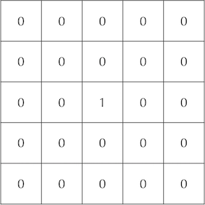

The Gray-Scott Model: A Cellular Automaton Generating Turing Patterns
A coarse-grained model of single particle diffusion
Part of the modeler’s work is not only to build models but to look for simple models of a system that capture the essence of what is being modeled and that can be run quickly and scaled to large inputs. Imagine, for example, how much computational power would be needed to build a particle-based model of your brain; the only way to study such a complicated system is by making simplifications.
In our case, we have a very “fine-grained” reaction-diffusion model illustrating Turing patterns, and we will now present a faster “coarse-grained” model that will allow us to visualize Turing patterns. To do so, we will stop keeping track of individual particles and instead grid off two-dimensional space into blocks and store only the concentration of particles of the block (i.e., the number of particles in the block). To make things even simpler, we assume that there is some maximum concentration of particles possible, so that we can divide the number of particles by this maximum concentration and obtain a decimal number between 0 and 1.
Let us begin with a simple example of the diffusion of only A particles (we will later add B particles as well as reactions to our model). Say that the particles are at maximum concentration in the central cell of our grid, and are present nowhere else, as the following figure illustrates.
 A 5 x 5 grid showing hypothetical initial concentrations of A particles. Cells are labeled by numbers between 0 and 1 representing their concentration of a single particle. In this example, the central cell has maximum concentration, and no particles are contained in any other cell.
We will now update the grid of cells after one time step in a way that mimics diffusion. To do so, we will spread out the concentration of particles in each square to its eight neighbors; one way of doing so is to assume that 20% of the current cell’s concentration diffuses to each of its four adjacent neighbors, and that 5% of the cell’s concentration diffuses to its four diagonal neighbors. Because the central square in our ongoing example is the only cell with any particles, the updated concentrations of our particle after a single time step are shown in the following figure.
 A grid showing an update to the system in the previous figure after diffusion of particles after a single time step.
A grid showing an update to the system in the previous figure after diffusion of particles after a single time step.
After an additional time step, the particles continue to diffuse outward. For example, each diagonal neighbor of the central cell in the above figure, which has a concentration of 0.05, will lose all of its particles in the next step. This cell will also gain 20% of the particles from two of its adjacent neighbors, along with 5% of the particles from the central square (which doesn’t have any particles). This makes the updated concentration of this cell equal to 0.2(0.2) + 0.2(0.2) + 0.05(0) = 0.04 + 0.04 + 0 = 0.08.
Each of the four cells adjacent to the central square will receive 20% of the particles from two of its adjacent neighbors, which have a concentration of 0.05 each. Such a cell will also receive 5% of the particles from two of its diagonal neighbors, which have a concentration of 0.2. Therefore, the updated concentration of each of these cells is 2(0.2)(0.05) + 2(0.05)(0.2) = 0.02 + 0.02 = 0.04.
Finally, the central square receives 20% of the particles from each of its four adjacent neighbors, as well as 5% of the particles from each of its four diagonal neighbors. As a result, the central square’s concentration is updated to be 4(0.2)(0.2) + 4(0.05)(0.05) = 0.16 + 0.01 = 0.17.
As a result, the central nine squares after two time steps are as shown in the following figure.
 A grid showing an update to the central nine squares of the diffusion system in the previous figure after an additional time step. The cells labeled “?” are left as an exercise for the reader.
A grid showing an update to the central nine squares of the diffusion system in the previous figure after an additional time step. The cells labeled “?” are left as an exercise for the reader.
STOP: What should the values of the “?” cells be in the above figure? Note that these cells are neighbors of cells with positive concentrations after one time step, so their concentrations should be positive. Click here to see the answer.
{kind=link}
The coarse-grained model of particle diffusion that we have built is a variant of a cellular automaton, or a grid of cells in which we use fixed rules to update the status of a cell based on its current status and those of its neighbors. Cellular automata form a rich area of research applied to a wide variety of fields dating back to the middle of the 20th Century; if you are interested in learning more about them from the perspective of programming, check out the Programming for Lovers project.
Slowing down the rate of diffusion
There is just one problem. Our cellular automaton model of diffusion is too volatile! In a true diffusion process, all of the particles would not rush out of the central square in a single time step.
Our solution is to add a parameter dA representing the rate of diffusion of A. Instead of moving a cell’s entire concentration of particles to its neighbors in a single time step, we move only the fraction dA of them.
To revisit our original example, say that dA is equal to 0.2. After the first time step, only 20% of the central cell’s particles will be spread to its neighbors. The figure below illustrates that the central square is updated to 0.8, its adjacent neighbors are updated to 0.2dA = 0.04, and its diagonal neighbors are updated to 0.05dA = 0.01.
 An updated grid of cells showing the concentration of A particles after one time step if dA = 0.2.
An updated grid of cells showing the concentration of A particles after one time step if dA = 0.2.
Adding a second particle to our diffusion simulation
We now will add particle B to the simulation, which also starts with 100% concentration in the central square. Recall that B, our “predator” molecule, diffuses half as fast as A, the “prey” molecule. If we set the diffusion rate dB equal to 0.1, then our cells after a time step will be updated as shown in the figure below. This figure represents the concentration of the two particles in each cell as an ordered pair ([A], [B]).
 A figure showing cellular concentrations after one time step for two particles A and B diffusing at rates dA = 0.2 and dB = 0.1. Each cell is labeled by the ordered pair ([A], [B]).
A figure showing cellular concentrations after one time step for two particles A and B diffusing at rates dA = 0.2 and dB = 0.1. Each cell is labeled by the ordered pair ([A], [B]).
STOP: Update the cells in the above figure after another generation of diffusion. Use the diffusion rates dA = 0.2 and dB = 0.1.
In the following tutorial, we will implement the cellular automaton using a Jupyter notebook and visualize how well this automaton mimics the diffusion of A and B particles. We will then continue on in the next section with adding reactions to our automaton model.
Adding reactions and completing the Gray-Scott model
Now that we have established a cellular automaton for tracking concentrations of two types of particles as they diffuse, we will add the following three reactions to complete the model.
- A “feed” reaction in which new A particles are fed into the system at a constant rate.
- A “death” reaction in which B particles are removed from the system at a rate proportional to their current concentration.
- A “reproduction” reaction A + 2B → 3B.
STOP: How might we incorporate these reactions into our automaton?
We will address these reactions one at a time. First, we have the feed reaction, which takes place at a feed rate. It is tempting to simply add some constant value f to the concentration of each cell in each time step. However, we want to avoid a situation in which the concentration of A particles is close to 1 and the feed reaction causes the concentration of A particles to exceed 1.
Instead, if a given cell has current concentration [A], then we will add f(1-[A]) to the concentration of the cell. For example, if [A] is 0.01, then we will add 0.99f to the cell because the current concentration is low. If [A] is 0.8, then we will only add 0.2f to the concentration.
Second, we consider the death reaction of B particles, which takes place at a kill rate. Recall from the previous lesson that the kill rate is proportional to the current concentration of B particles. As a result, if a cell has concentration [B], then for some constant k between 0 and 1, we will subtract k · [B] from the concentration of B particles.
Third, we have the reproduction reaction A + 2B → 3B. The higher the concentration of A and B, the more this reaction will take place. Furthermore, because we need two B particles in order for the collision to occur, the reaction should be even more rare if we have a low concentration of B than if we have a low concentration of A. Therefore, if a given cell is represented by the concentrations ([A], [B]), then we will subtract [A] · [B]2 from the concentration of A and add [A] · [B]2 to the concentration of B in the next time step.
Let us consider an example of how a single cell might update its concentration of both particle types as a result of reaction and diffusion. Say that we have the following hypothetical parameter values:
- dA = 0.2
- dB = 0.1
- f = 0.3
- k = 0.4
Furthermore, say that our cell has the concentrations ([A], [B]) = (0.7, 0.5). Then as a result of diffusion, the cell’s concentration of A will decrease by 0.7 · dA = 0.14, and its concentration of B will decrease by 0.5 · dB = 0.05. It will also receive particles from neighboring cells; for example, say that it receives an increase to its concentration of A by 0.08 and an increase to its concentration of B by 0.06 as the result of diffusion from neighbors.
Now let us consider the three reactions. The feed reaction will cause the cell’s concentration of A to increase by (1 - [A]) · f = 0.09. The death reaction will cause its concentration of B to decrease by k · [B] = 0.2. And the reproduction reaction will mean that the concentration of A decreases by [A] · [B]2 = 0.175, with the concentration of B increasing by the same amount.
As the result of all these processes, we update the concentrations of A and B to the following values ([A]’, [B]’) in the next time step.
[A]’ = 0.7 - 0.14 + 0.08 + 0.09 - 0.175 = 0.555
[B]’ = 0.5 - 0.05 + 0.06 - 0.2 + 0.175 = 0.485
Applying these cell-based reaction-diffusion computations over all cells in parallel and over many generations forms a cellular automaton called the Gray-Scott model1. We should now feel confident expanding the Jupyter notebook from the previous diffusion tutorial to include the additional three reactions. The question is: will we still see Turing patterns?
Reflection on the Gray-Scott model
In contrast to using a particle simulator, our Jupyter Notebook demo probably produced an animation of Turing patterns in under a minute on your computer.
To visualize the changing concentrations in each cell, we use a color map to color each cell based on its concentrations. Specifically, we plot a cell’s color based on its value of the concentration of predators divided by the sum of the concentrations of predators and prey. If a cell has a value close to zero for this ratio (meaning very few predators compared to prey), then it will be colored red, while if it has a value close to 1 (meaning many predators), then it will be colored dark blue. The Spectral color map that we use is shown in the figure below.

The following animation shows an animation of the Gray-Scott model using the parameters f = 0.034 and k = 0.095.

If we expand the size of the simulation and add new predator locations to the grid, then the patterns become more complex as they intersect.

If we keep the feed rate constant and tweak the kill rate ever so slightly to k = 0.097, then the patterns change significantly into spots.

If we make the prey a little happier as well, raising f to 0.038 and k to 0.099, then we have a different striped pattern.

And if we raise f to 0.042 and k to 0.101, then again we see a spot pattern.

The point that we are making here is that very slight changes in our model’s parameters can produce drastically different results in terms of the patterns that we witness. In this prologue’s conclusion, we will say more about this and connect this observation back to our original motivation of patterns on animals’ skin.
-
P. Gray and S.K. Scott, Autocatalytic reactions in the isothermal, continuous stirred tank reactor: isolas and other forms of multistability, Chemical Engineering Science 38 (1983) 29-43. ↩